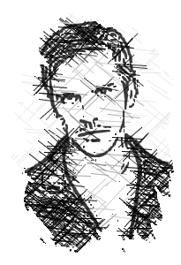

Âgé de dix-huit ans au début de l’histoire, Clément est le fils de Sandra, tenancière de
l’auberge du Pur-Sang, et de Béric, ancien général à la retraite originaire de Fort-Cristal.
De tous les personnages que j’ai créés, Clément est, je crois, celui qui plaît le plus. Il est
d’ailleurs resté mon personnage préféré pendant assez longtemps.
Pourquoi cet engouement ? Parce que Clément est le genre d’ami qu’on voudrait tous avoir. Un
garçon loyal, gentil, affectueux, un brin maladroit, et toujours une bonne blague au bord des
lèvres.
Motivé depuis toujours par l’exemple de son père, Clément aspire à devenir soldat et à intégrer
la prestigieuse armée de Shirolite, sa ville natale. Ayant quitté l’école à l’âge de seize ans,
il attend patiemment sa majorité en aidant ses parents à l’auberge, mais également en assistant
aux entraînements des soldats.
Garçon au cœur tendre, il n’aime pas les effusions de sang inutiles, aussi, son arme de
prédilection est la massue, bien qu’il ait appris quelques rudiments de l’épée. Il manie
également le boomerang et l’arc, avec moins de précision cependant.
Si Clément peut se montrer susceptible, il est rare de le voir vraiment en colère, et,
contrairement à Frost qui en vient facilement aux mains, il ne porte jamais le premier coup, si
ce n’est en combat réel.
Et, à ses yeux, violenter une femme est le comble de la honte pour un homme, et jamais il ne
laissera un tel spectacle se produire devant ses yeux, quitte à y laisser quelques dents.
Véritable feu follet, Clément ne parvient pas à entretenir d’amitiés solides (si ce n’est avec
Frost, puis, plus tard, avec Yuna et Philomène), ni n’a de vie sentimentale... connue. Car oui,
à l’insu du lecteur, Clément est amoureux. Mais de qui ? Dans la version précédente, Yuna était
l’élue de son cœur. Dans celle-ci... je vous laisserai le découvrir... à l’occasion d’un
spin-off ? "